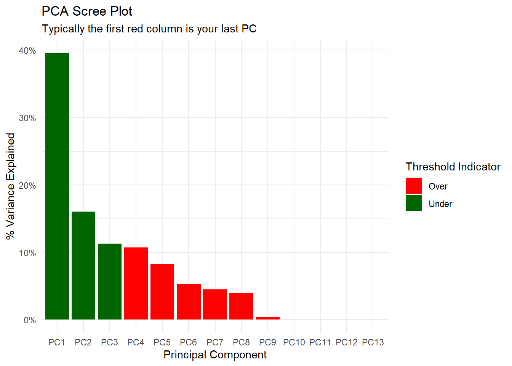
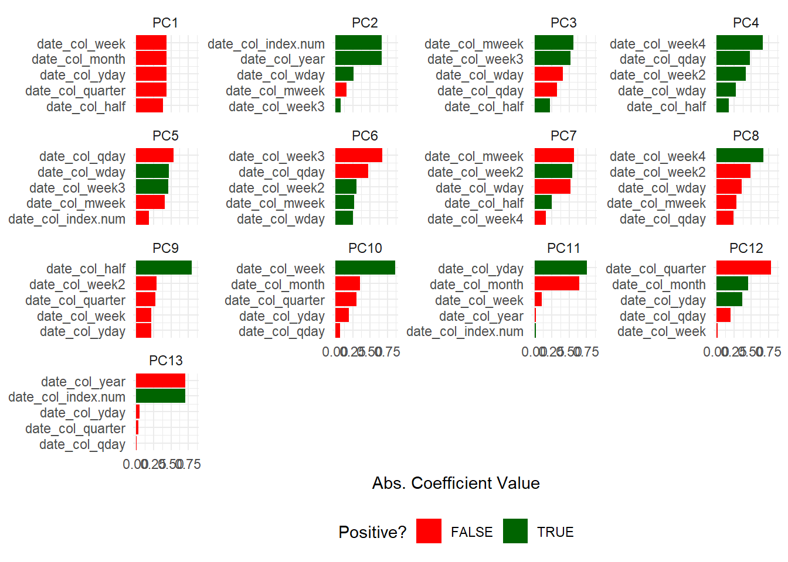

pca_your_recipe(
.recipe_object,
.data,
.threshold = 0.75,
.top_n = 5
)Introduction
In this post we are going to talk about how you can perform principal component analysis in R with {healthyR.ai} in a tidyverse compliant fashion.
The specific function we are going to discuss on this post is pca_your_recipe()
The Function
So lets talk a little bit about the function itself. Firstly, what does the full function call look like? See below (has sensible defaults):
As we can see there are four parameters that require arguments to be passed to them for this function. Here is a list of the parameters and the type of arguments that should be passed to them:
.recipe_objectwhich is the recipe object you want to pass that has been previously created. There there is the.dataparameter which is the full data set that is used in the original recipe object passed into .recipe_object in order to obtain the baked data of the transform. Thirdly,.thresholdwhich is a number between 0 and 1. A fraction of the total variance that should be covered by the components..top_nwhich is how many variables loadings should be returned per PC.
The function will return a list object with several items in it. We are going to go over each one of those items in this post, but here they are:
- pca_transform - This is the pca recipe.
- variable_loadings
- variable_variance
- pca_estimates
- pca_juiced_estimates
- pca_baked_data
- pca_variance_df
- pca_rotattion_df
- pca_variance_scree_plt
- pca_loadings_plt
- pca_loadings_plotly
- pca_top_n_loadings_plt
- pca_top_n_plotly
Here is a link to the function pca_your_recipe
Let’s work through an example and show each object in the return.
Example
Library Load
pacman::p_load(
"healthyR.ai",
"healthyR.data",
"timetk",
"dplyr",
"purrr",
"rsample",
"recipes"
)Now that we have our libraries loaded lets get the data.
Data
data_tbl <- healthyR_data %>%
select(visit_end_date_time) %>%
summarise_by_time(
.date_var = visit_end_date_time,
.by = "month",
value = n()
) %>%
set_names("date_col", "value") %>%
filter_by_time(
.date_var = date_col,
.start_date = "2013",
.end_date = "2020"
)
head(data_tbl, 5)# A tibble: 5 × 2
date_col value
<dttm> <int>
1 2013-01-01 00:00:00 2082
2 2013-02-01 00:00:00 1719
3 2013-03-01 00:00:00 1796
4 2013-04-01 00:00:00 1865
5 2013-05-01 00:00:00 2028Now for the splits object.
Splits
splits <- initial_split(data = data_tbl, prop = 0.8)
splits<Training/Testing/Total>
<76/19/95>Recipe and Output
Now it is time for the recipe and the output objects.
rec_obj <- recipe(value ~ ., training(splits)) %>%
step_timeseries_signature(date_col) %>%
step_rm(matches("(iso$)|(xts$)|(hour)|(min)|(sec)|(am.pm)"))
output_list <- pca_your_recipe(rec_obj, .data = data_tbl)Output Objects
Now that we have our output, let’s start to explore it all.
PCA Transform
output_list$pca_transformRecipe
Inputs:
role #variables
outcome 1
predictor 1
Operations:
Timeseries signature features from date_col
Variables removed matches("(iso$)|(xts$)|(hour)|(min)|(sec)|(am.pm)")
Centering for recipes::all_numeric()
Scaling for recipes::all_numeric()
Sparse, unbalanced variable filter on recipes::all_numeric()
PCA extraction with recipes::all_numeric_predictors()Variable Loadings
output_list$variable_loadings# A tibble: 169 × 4
terms value component id
<chr> <dbl> <chr> <chr>
1 date_col_index.num -0.00137 PC1 pca_bVc37
2 date_col_year 0.0529 PC1 pca_bVc37
3 date_col_half -0.385 PC1 pca_bVc37
4 date_col_quarter -0.434 PC1 pca_bVc37
5 date_col_month -0.437 PC1 pca_bVc37
6 date_col_wday -0.0159 PC1 pca_bVc37
7 date_col_qday -0.0608 PC1 pca_bVc37
8 date_col_yday -0.437 PC1 pca_bVc37
9 date_col_mweek 0.0537 PC1 pca_bVc37
10 date_col_week -0.438 PC1 pca_bVc37
# … with 159 more rowsVariable Variance
output_list$variable_variance# A tibble: 52 × 4
terms value component id
<chr> <dbl> <int> <chr>
1 variance 5.14 1 pca_bVc37
2 variance 2.08 2 pca_bVc37
3 variance 1.47 3 pca_bVc37
4 variance 1.40 4 pca_bVc37
5 variance 1.07 5 pca_bVc37
6 variance 0.684 6 pca_bVc37
7 variance 0.583 7 pca_bVc37
8 variance 0.519 8 pca_bVc37
9 variance 0.0534 9 pca_bVc37
10 variance 0.000231 10 pca_bVc37
# … with 42 more rowsPCA Estimates
output_list$pca_estimatesRecipe
Inputs:
role #variables
outcome 1
predictor 1
Training data contained 76 data points and no missing data.
Operations:
Timeseries signature features from date_col [trained]
Variables removed date_col_year.iso, date_col_month.xts, date_col_hour, d... [trained]
Centering for value, date_col_index.num, date_col_year, date_... [trained]
Scaling for value, date_col_index.num, date_col_year, date_... [trained]
Sparse, unbalanced variable filter removed date_col_day, date_col_mday, date_col_m... [trained]
PCA extraction with date_col_index.num, date_col_year, date_col_half... [trained]PCA Juiced Estimates
output_list$pca_juiced_estimates# A tibble: 76 × 8
date_col value date_col…¹ date_…² PC1 PC2 PC3 PC4
<dttm> <dbl> <ord> <ord> <dbl> <dbl> <dbl> <dbl>
1 2018-06-01 00:00:00 0.676 June Friday 0.733 1.23 -1.30 0.536
2 2016-01-01 00:00:00 -0.133 January Friday 3.51 -0.102 -0.500 -0.556
3 2013-05-01 00:00:00 1.67 May Wednes… 1.15 -2.07 -1.68 -0.319
4 2018-10-01 00:00:00 0.337 October Monday -2.30 0.499 1.91 -1.92
5 2016-09-01 00:00:00 -0.130 September Thursd… -1.08 0.0972 0.410 2.64
6 2016-07-01 00:00:00 -0.364 July Friday -0.0591 0.0211 -0.333 1.11
7 2020-02-01 00:00:00 -0.646 February Saturd… 3.08 2.48 -0.0249 0.214
8 2020-08-01 00:00:00 -1.42 August Saturd… -0.491 2.60 0.142 1.88
9 2018-03-01 00:00:00 0.243 March Thursd… 2.74 0.848 -1.53 0.260
10 2015-05-01 00:00:00 -0.0148 May Friday 1.18 -0.636 -1.88 -0.147
# … with 66 more rows, and abbreviated variable names ¹date_col_month.lbl,
# ²date_col_wday.lblPCA Baked Data
output_list$pca_baked_data# A tibble: 95 × 8
date_col value date_col_month…¹ date_…² PC1 PC2 PC3 PC4
<dttm> <dbl> <ord> <ord> <dbl> <dbl> <dbl> <dbl>
1 2013-01-01 00:00:00 1.86 January Tuesday 3.60 -2.64 1.13 -0.871
2 2013-02-01 00:00:00 0.596 February Friday 2.93 -1.76 -0.532 0.424
3 2013-03-01 00:00:00 0.864 March Friday 2.62 -1.95 -2.24 0.643
4 2013-04-01 00:00:00 1.10 April Monday 2.09 -2.68 1.39 -0.867
5 2013-05-01 00:00:00 1.67 May Wednes… 1.15 -2.07 -1.68 -0.319
6 2013-06-01 00:00:00 0.923 June Saturd… 0.612 -1.57 -2.01 0.919
7 2013-07-01 00:00:00 1.29 July Monday -0.669 -2.41 2.29 -0.420
8 2013-08-01 00:00:00 1.18 August Thursd… -0.628 -1.76 -0.165 1.96
9 2013-09-01 00:00:00 0.714 September Sunday -1.11 -2.19 0.910 2.25
10 2013-10-01 00:00:00 1.40 October Tuesday -2.55 -1.91 -0.128 -1.48
# … with 85 more rows, and abbreviated variable names ¹date_col_month.lbl,
# ²date_col_wday.lblPCA Variance Data Frame
output_list$pca_variance_df# A tibble: 13 × 6
PC var_explained var_pct_txt cum_var_pct cum_var_pct_txt ou_threshold
<chr> <dbl> <chr> <dbl> <chr> <fct>
1 PC1 0.395 39.55% 0.395 39.55% Under
2 PC2 0.160 16.02% 0.556 55.57% Under
3 PC3 0.113 11.29% 0.669 66.86% Under
4 PC4 0.107 10.75% 0.776 77.61% Over
5 PC5 0.0824 8.24% 0.858 85.85% Over
6 PC6 0.0526 5.26% 0.911 91.11% Over
7 PC7 0.0449 4.49% 0.956 95.59% Over
8 PC8 0.0400 4.00% 0.996 99.59% Over
9 PC9 0.00411 0.41% 1.00 100.00% Over
10 PC10 0.0000178 0.00% 1.00 100.00% Over
11 PC11 0.000000712 0.00% 1.00 100.00% Over
12 PC12 0.000000273 0.00% 1.00 100.00% Over
13 PC13 0.00000000196 0.00% 1 100.00% Over PCA Rotation Data Frame
output_list$pca_rotation_df# A tibble: 13 × 13
PC1 PC2 PC3 PC4 PC5 PC6 PC7 PC8 PC9
<dbl> <dbl> <dbl> <dbl> <dbl> <dbl> <dbl> <dbl> <dbl>
1 -0.00137 0.671 0.116 -0.0521 -0.183 0.0165 0.0471 0.0277 -0.0177
2 0.0529 0.667 0.116 -0.0610 -0.173 0.0146 0.0466 0.0313 0.00904
3 -0.385 0.0115 0.222 0.173 0.140 0.217 0.250 -0.0112 0.802
4 -0.434 0.00824 0.0752 -0.0427 0.0615 0.135 0.00843 0.0332 -0.272
5 -0.437 0.00278 -0.00879 0.0737 -0.0734 0.0167 0.00135 -0.0264 -0.213
6 -0.0159 0.265 -0.406 0.274 0.468 0.254 -0.520 -0.366 0.0484
7 -0.0608 -0.0200 -0.325 0.480 -0.542 -0.476 -0.0318 -0.244 0.187
8 -0.437 0.00435 -0.00655 0.0740 -0.0733 0.0149 0.00231 -0.0303 -0.216
9 0.0537 -0.164 0.562 -0.0242 -0.414 0.267 -0.572 -0.285 0.0519
10 -0.438 0.00638 -0.00736 0.0676 -0.0704 0.0236 0.00470 -0.0266 -0.219
11 0.250 -0.0238 0.208 0.420 0.0436 0.301 0.544 -0.492 -0.293
12 -0.0474 0.0762 0.516 0.142 0.460 -0.676 -0.108 -0.144 -0.0636
13 0.123 0.00776 0.150 0.666 0.0183 0.152 -0.161 0.676 -0.111
# … with 4 more variables: PC10 <dbl>, PC11 <dbl>, PC12 <dbl>, PC13 <dbl>PCA Variance Scree Plot
output_list$pca_variance_scree_plt
PCA Loadings Plot
output_list$pca_loadings_plt
output_list$pca_loadings_plotlyTop N Loadings Plots
output_list$pca_top_n_loadings_plt
output_list$pca_top_n_plotly